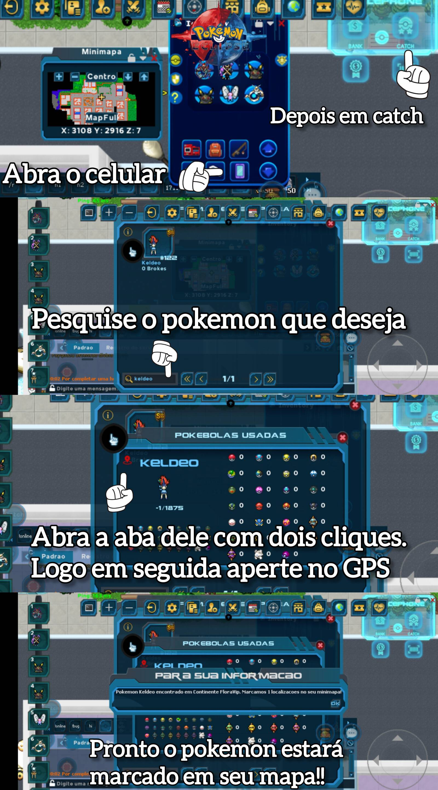

Pokémons de Catch
Aprenda a usar o radar para encontrar e rastrear todos os Pokémons de captura disponíveis no jogo.
Como Usar o Radar de Pokémons
Siga o passo a passo na imagem abaixo para localizar o Pokémon que você deseja capturar:

Lista de Pokémons de Catch
[Aqui podemos adicionar uma lista ou tabela com os Pokémons de catch, se você tiver essa informação.]